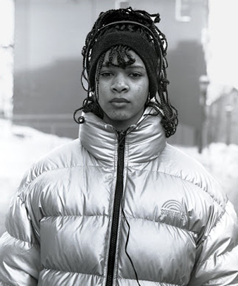
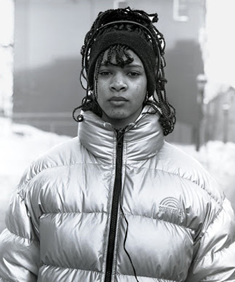

Newburgh: Documentary film
-photographed and directed by Dmitri Kasterine -
In 1996, following a tip from a friend one day, photographer Dmitri Kasterine drove 15 miles from his home in Garrison, N.Y., to nearby Newburgh. What he found there was unlike anything he had ever seen before.
Dmitri was immediately drawn to the crumbling Victorian houses, the neglected buildings, and, most strikingly, the unassuming grace of the people on the street. But when he tried to take his first photo, his subject told him to go away. Still, Kasterine returned, and kept coming back for the next 20 years.
“Nobody has ever done quite this,” Kasterine says, “which is to say, look at these beautiful people.”
Citation: An Octogenarian's Opus, NPR

 


Newburgh: A 20 Year Timeline
- photography, book, public exhibit and film -
A rare commitment between artist and subject has taken place between an unlikely pair. Dmitri, in his 80s, from a different time and world (proper?) ...blah blah...
Here is some text describing the book.
Here is some text describing how the exhibition was concieved funded and mounted.
Currently in production the documentary Newburgh: Beauty and Tragedy records life in one of New York's poorest and most violent cities. The film brings the stories behind the photographs to the screen. People photographed as teenagers resurface and speak about their lives since first encountering the photographer. New subjects are discovered, giving further insight into the barriers facing Newburgh today.
They describe a world of poverty, surrounded by violence, drug addiction and injustice. Despite of the hardship, the film captures the lyrical side of Newburgh and the abiding hope that shines there.
Newburgh: Portrait of a City
- published by W.W. Norton -
Praise for the book:
Kasterine took to photographing this city, producing a great many wonderful portraits, and it is now our duty to look at them. With photography having become a bit too self-centered, a bit too focused on navels and on often petty dramas that don't invoke anyone but the photographer, this book might serve as a good reminder that there is a world out there, and it's not necessarily a pretty world.
It's not necessarily a pretty world, but it will give those who look and care the gift of being able to make wonderful photographs - photographs that are wonderful because of their beauty, and that are wonderful because they show that someone has an interest in the human condition beyond the walls of their own home. This then might make us, the viewers, take an interest as well.
Citation: Jörg Colberg, Conscientious
Newburgh: The Ritz Wall Exhibit
- located on Broadway and Liberty in Newburgh, NY -
Praise for the exhibit:
The work represents a people disenfranchised from representation itself; the work makes visible that which has been invisible for decades. The pictured residents of Newburgh have no opportunity to represent themselves as a people who live daily outside the mainstream representation of poverty and violence. Today, Newburgh is slowly turning itself into what many hope will be a sustainable, locally managed and developed community. Dmitri's work offers that representation: a rebounding city peopled by hopeful folk united in their diverse stories. Newburgh now owns the pictures.